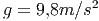
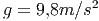

<<<<<<< HEAD
Funçoes
<<<<<<< HEAD
<<<<<<< HEAD
<<<<<<< HEAD
<<<<<<< HEAD
=======
>>>>>>> 62bea6a0d0a1d3eca740d93a452697554da972de
=======
>>>>>>> 8ffe51d4bbc8f1e500cc9c435f05cb1c6f0ffef3
=======
>>>>>>> 2f43bff4df7198ad5fd8ebe602c2f00c0d1ecf01
=======
>>>>>>> a89bb6fd5bd3faff679a502c98ff65257591aa83
Além das muitas funções já pré-definidas no Scilab, o usuário podemos
definir nossas próprias funções. Para tanto, existem duas instruções no
Scilab:
deff
function
A instrução deff é apropriada para definirmos funções com poucas
computações. Quando a função exige um grande quantidade de código para ser
definida, a melhor opção é usar a instrução function. Veja os seguintes
exemplos:
Exemplo A.5.1.O seguinte código:
-->deff(’y = f(x)’, ’y = x + sin(x)’)
define, no Scilab, a função .
Observe que . Confirme isso computando:
-->f(%pi)
no Scilab.
Alternativamente, definimos a mesma função com o código:
function [y] = f(x)
y = x + sin(x)
endfunction
Verifique!
Exemplo A.5.2.O seguinte código Scilab:
function [z] = h(x,y)
if (x < y) then
z = y - x
else
z = x - y
end
endfunction
define a função:
Exemplo A.5.3.O seguinte código:
function [y] = J(x)
y(1,1) = 2*x(1)
y(1,2) = 2*x(2)
 .
.
 . Confirme isso computando:
. Confirme isso computando:

 da função:
da função:


 , de forma que
, de forma que  . Mas observamos que
. Mas observamos que
 somente quando  e solução positivas somente quando
somente quando  e solução positivas somente quando
 .
.
 for muito grande, o método pode se tornar
instável, produzindo solução espúrias.
for muito grande, o método pode se tornar
instável, produzindo solução espúrias.